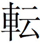
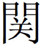
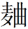
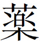
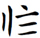
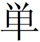
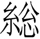

現代独逸文学一本 三·六○ 一月四日
造形美術ニ于ケル形式問題一本 三·六○
都会の論理一本 一·○○
新興芸術四本 四·○○ 一月六日
詩と詩論（五至六）二本 六·○○ 一月十七日
世界美術全集（十二）一本 二·○○
Russia Today and Yesterday一本 一二·○○ 一月二十五日
グリム童話集（七）一本 ○·六○
 式と時代一本 一·五○
式と時代一本 一·五○
レニンと哲学一本 一·八○
レニン主義と哲学一本 一·五○
フィリツプ全集（一及二）二本 五·○○四二·六○○

形期の歷史学一本 二·四○ 二月四日千夜一夜（一）一本 二·四○
四十一人目一本 一·○○
自然科学史一本 ○·八○
Le Miroir du Livre d'Art一本 季志仁寄赠
Contemporary Figure Painters一本 六·三○ 二月五日
Etching of Today一本 六·三○
Eine Frau allein一本Agnes Smedley 赠 二月十日
版畫第三、四、十三、十四辑各一帖 五·○○ 二月十一日
版畫特辑一帖五枚 三·四○
昆虫記（十）一本 ○·六○ 二月十五日
Der nackte Mensch in der Kunst一本 六·○○
映畫芸術史一本 二·○○ 二月二十日
Der befreite Don Quixote一本 二·○○ 二月二十六日
Die Abenteuer des J.Jurenito一本 五·○○
Deutschland，D.über alles一本 四·○○
30 neue Erzähler des neuen Russland一本 六·五○
Die 19一本 三·五○
Taschkent u.and.一本 三·五○
Zement一本 五·五○
世界美術全集（4）一本 二·○○ 二月二十七日
祭祀及礼と法律一本 三·八○七二·○○○
千夜一夜（2）一本 二·五○ 三月二日
文学の社会学的批判一本 二·一○ 三月五日
芸術に

する走書的 書一本 二·○○
書一本 二·○○
文学的戬術論一本 二·三○
S.Sauvage一本 五·五○ 三月八日
Der russische Revolutionsfilm一本 一·八○
G.Grosse's Die Zeichnungen一本 四·六○
Das neue Gesicht der herrschenden Klasse一本 四·六○
Der Buchstabe“G”一本 四·六○
Notre Ami Louis Jou一本 四○·○○ 三月十日
弁証法と自然科学一本 二·三○ 三月十一日
社会学上ヨリ見タル芸術一本 二·三○
Die Kunst und die Gesellschaft一本 三○·○○ 三月十四日
柳濑正夢畫集一本 二·四○ 三月十五日
詩学概論一本 三·二○ 三月十七日
生物学講座第一函六本 三·二○
鉄の流一本 一·六○ 三月二十六日
装甲列車一本 一·六○
生物学講座第二函七本 三·三○
世界美術全集（五）一本 二·四○ 三月二十九日
オスカア·ワイルド一本 ○·八○ 三月三十一日
芸術の暗示と恐怖一本 ○·六○
フィリツプ全集（3）一本 二·三○一○九·○○○
新郑古器图录二本 五·六○ 四月三日
芸術とマルクス主義一本 一·七○ 四月七日
唯物史観序説一本 一·七○
千夜一夜（3）一本 二·六○
鼓掌绝尘一本 李秉中赠 四月二十三日
叛乱一本 一·五○ 四月二十四日
巴黎の憂鬱一本 一·八○
世界出版美術史一本 七·七○
世界美術全集（13）一本 一·八○ 四月二十六日
Ten Polish Folk Tales一本 三·○○
Die Schaffenden第二至四年三帖 三七○·五○ 四月二十七日
同上第五年分二帖二十枚 六一·七○
56 Drawings of S.R.一本 六·○○ 四月二十八日
德国原枚[板]木刻十一枚 一二○·○○ 四月三十日
Amerika im Holzschnitt一本 六·○○
Passion一本 六·○○
Der Dom一本 六·○○
Der Persische Orden一本 八·○○
Das Werk Diego Riveras一本 四·五○
Die Kunst und die Gesellschaft一本 三二·○○
Das Schlosz der Wahrheit一本 二·○○
Was Peteschens Freunde Erzahlen一本 一·五○
Volksbuch 1930一本 二·○○六四二·○○○
昆虫記（五）一本 二·五○ 五月二日
Buch der Lieder一本 学昭寄赠
Les Artistes du Livre二本 一三·○○
The Nineteen一本 七·○○
G.Grosz's Gezeichneten一本 五·○○ 五月三日
Neue Gesicht一本 五·○○
Hintergrund一帖十七枚 一·四○
Die Pioniere sind da一本 ○·四○
Ein Blick in die Welt ○·八○
支那近代戢曲史一本 一二·〇〇 五月七日
C.C.C.P.一本 二·四○
生物学講座第三辑六本 三·四○ 五月十一日
Der stille Don一本 五·四○ 五月十三日
Die Brusky一本 四·六○
プロ芸術教程（3）一本 一·七○ 五月十四日
芸術社会学一本 二·五○
Osvob.Don-Kixot一本 靖华寄来 五月十六日
芸術学研究（2）一本 三·二○ 五月十七日
ロシア革命映畫一本 一·八○ 五月十九日
東亜考古学研究一本 一四·○○
生物学講座（4）七本 三·四○
千夜一夜（4）一本 二·六○ 五月二十二日
支那産“

”ニ就イテ一本 一·七○ 五月二十三日漢

写真集成（一）一本 二·○○食療本草の考察一本 二·○○
人類協同史一本 三·二○
文学論一本 一·六○
新興芸術（七、八）一本 一·二○ 五月二十五日
千夜一夜（五）一本 三·○○ 五月卅日
世界美術全集（14）一本 三·○○
ソ·ロ文学の展望一本 二·○○
シュベイクの冒险（上）一本 三·○○
沙上の足跡一本 三·六○ 五月卅一日
巡洋艦ザリヤー一本 一·四○
吼えろ支那一本 二·○○一○八·○○
大学生の日記一本 一·八○ 六月二日
プロ美術の爲めに一本 二·六○
マルクス主義と法理学一本 一·八○ 六月三日
ジヤズ文學（一——四）四本 一二·○○ 六月四日
台尼画集一本 靖华寄来
洒落の精神分析一本 三·○○ 六月六日
Platon's Phaedo一本 二四·○○ 六月十一日
С.Чехонин画集一本 靖华寄来 六月十三日
А.Каплун画册一本 同上
書票の話一本 一○·○○
現代美学思潮一本 六·○○ 六月十六日
生物学講座（五）六本 三·八○ 六月十七日
世界美術全集（

）一本 三·○○ 六月二十日V.F.Komissarzhevskaia纪念册一本 靖华寄来
六月二十八日
東亜文明の黎明一本 四·○○ 六月二十九日
芸術とは何ぞや一本 一·六○
儿童剪纸画二枚 二○·○○ 六月三十日
Deutscher Graphiker一本 一八·○○
Für Alle！一本 四·○○一一五·六○○
千夜一夜（六）一本 四·○○ 七月二日
自然科学と弁証法（下）一本 三·○○ 七月五日
インテリゲンチヤ一本 三·○○ 七月七日
太阳（木刻）一枚 三○·○○ 七月十日
战地（木刻）一枚 一五·○○
作书之豫言者（木刻）一枚 三○·○○
蝶与鸟（著色石版）一枚 一○·○○
H.Robinska：Pioniere一本 二·○○ 七月十一日
Landschaften und Stimmungen一本 二·五○
Mit Pinsel und Schere一本 一·○○ 七月十五日
Ein Ruf ertönt一本 三·○○
Ein Weberaufstand etc 三·○○
Mutter und Kind一本 三·○○
Käthe Kollwitz-Werk一本 一六·○○
Käthe Kollwitz Mappe一帖 八·○○
詩と詩論（七、八）二本 八·○○ 七月十七日
二九年度世界芸術写真年鑑一本 六·○○ 七月十八日
生物学講座（六辑）七本一函 四·○○ 七月十九日
世界美術全集（十五）一本 三·○○ 七月二十一日
Dein Schwester五枚 七○·○○
R.M.Rilke's Briefe一本 学昭寄赠 七月二十二日
欧洲文芸思潮史一本 四·四○ 七月二十三日
支那古明器泥象図説二本 三六·○○ 七月二十八日
Plunut Nekogda一本 靖华寄来 七月三十日
Tri Sestri一本 同上
Ha Dhe一本 同上二六五·○○○
現代のフランス文学一本 三·○○ 八月一日
現代の独乙文学一本 二·○○
超現实主義と絵畫一本 三·○○
千夜一夜（7）一本 四·○○
Das Werk D.Riveras一本 六·○○
Volksbuch 1930一本 四·○○
歷史を捻ぢる一本 二·五○ 八月二日
Die polnische Kunst一本 八·五○ 八月六日
Des Antliz des Lebens一本 二·七○
Verschwörer u.Revolutionäre一本 三·○○
Eine Woche一本 一·二○
Panzerzug 14—69一本 一·○○
ソヴェートロシア文学理論一本 三·二○ 八月十四日
生物学講座（7）六本 四·○○ 八月十八日
Wie Franz u.Grete nach Russland reisten一本 二·○○
Hans-Ohne-Brot一本 一·○○
Roter Trommler 2—9八本 二·七○
Die Sonne一本 二五·○○
Mein Stundenbuch一本 三·五○
Мы，наши Друзья и н.Враги一本 一○·○○ 八月十九日
プロレタリア芸術教程（4）一本 二·○○ 八月二十二日
世界美術全集（34）一本 三·○○ 八月二十三日
芸術学研究（4）一本 四·○○ 八月二十四日
百衲本二十四史一部 豫约二七○·○○ 八月二十六日
千夜一夜（九）一本 四·○○ 八月二十九日
新洋画研究一本 四·○○ 八月三十日
影宋本汉书三十二本 预付讫 八月三十一日三七五·三○○
史的唯物論入門一本 二·六○ 九月四日
独逸基礎

語四○○○字一本 二·○○露西亜基礎語四千字一本 二·○○ 九月六日
アトリヱ（九月号）一本 二·三○
Октябрь一本 一·○○ 九月十日
Гравюра（2—4）三本 九·○○
戬 的唯物論一本 二·○○ 九月十二日
的唯物論一本 二·○○ 九月十二日
コクトオ芸術論一本 三·○○
ZEMENT插画木刻十枚 一四一·三○
新洋画研究（1）一本 四·○○ 九月十三日
悲盦 墨十集十本 二七·二○ 九月十四日
墨十集十本 二七·二○ 九月十四日
吴仓石书画册一本 二·七○
 重一本 三四·○○ 九月十六日
重一本 三四·○○ 九月十六日
生物学講座（八）七本 四·○○ 九月二十二日
The 7th Man一本 一○·○○
Mynoun：G.Grosz一本 三·○○ 九月二十三日
Karl Thylmann's Holzschnitte一本 二·四○
Kinder der Strasse一本 三·○○
“Mein Milljoh”一本 三·○○
W.Klemm：Das Tierbuch一本 四·八○
新フランス文学一本 五·○○ 九月二十四日
世界美術全集（35）一本 四·○○ 九月二十六日
Gore ot Uma一本 一○·○○ 九月十[三十]日二八二·三○○
千夜一夜（八）一本 四·○○ 十月四日
抒情カツト図案集一本 三·八○
Briefe an Gorki一本 一·五○ 十月七日
George Grosz一本 二·○○
BC 4ü一本 三·五○
Reineke Fuchs一本 四·○○
機械論と唯物論一本 二·○○ 十月八日
Einblick in Kunst一本 方仁寄来 十月九日
深川永代凉之図一枚 内山赠
詩と詩論（九）一本 三·○○ 十月十一日
Das Bein der Tiennette一本 三·二○ 十月十三日
Bilder Galerie zur Russ.Lit.一本 四·○○ 十月十五日
The New Woodcut一本 七·四○ 十月十八日
生物学講座（九）一函八本 四·○○
俄国古今文人画象十七幅 靖华寄来
Van Gogh-Mappe一帖十五幅 诗荃寄来 十月十九日
Die Wandrungen Gottes 同上
芸術社会学の方法論一本 一·二○ 十月二十二日
造型美術概論一本 五·六○
川柳漫畫全集（十一）一本 二·二○ 十月二十四日
いのちの洗濯一本 三·五○
文学革命の前哨一本 二·四○ 十月二十五日
機械と芸術革命一本 三·○○
F.Masereel's Bilder-Romane六本 二○·○○ 十月二十八日
同C.Stirnhiem's Chronik插画一本 四二·○○
同O.Wilde's The Ballad of Reading Gaol插画一本
三七·○○
同插画C.Philippe's Der alte Perdrix一本 三·○○
同Gesichter und Fratzen一本 二○·○○
W.Geiger：Tolstoi's Kreutzersonata插画一帖十三枚
四七·○○
Maler Daumier（Nachtrag）一本 一九·○○
天産鈉化合物の研究（其一）一本 三·○○
漢写真集成（第二辑）一本 二·六○
中国文字之原始及其构造二本 一·六○
世界美術全集（卅六）一本 三·○○ 十月三十日
Die Jagd nach Zaren一本 ○·六○
Das Attentat auf den Zaren一本 一·○○
千夜一夜（十）一本 三·八○○ 十月卅一日二六七·五○○
über alles die Liebe一本 七·二○ 十一月十日
Das Teufelische in der Kunst 一·八○
美術史の根本問題一本 四·八○
新しき芸術の獲得一本 五·二○
ボローヂン脱出記一本 二·○○ 十一月十一日
川柳漫畫全集（5）一本 二·二○ 十一月十三日
南阳汉画象集一本 二·四○ 十一月十五日
生物学講座（十）六本 四·○○
ドレフユス事件一本 二·五○ 十一月十六日
浮世絵名作集（第二回）第一辑二枚 一四·○○ 十一月十九日
同上第二辑二枚 一四·○○
Der Maler Daumier一本 六六·五○ 十一月二十日
世界美術全集（别卷十五）一本 三·○○
マチス以後一本 七·六○
芸術

論一本 一·八○ 十一月二十一日浮世絵名作集第三辑二枚 一四·○○ 十一月二十五日
The New Woodcut一本 七·五○ 十一月二十七日
芸術学研究（4）一本 四·○○
詩と詩論（特辑别册）一本 四·○○
機械と芸術の交流一本 五·○○
ヒスラーリ一本 三·○○
楽浪（特制本）一本 九○·○○ 十一月二十八日二二六·三○○
Abrechnung Folget一本 二·○○ 十二月二日
Die Kunst ist in Gefahr ○·七五○
China-Reise一本 三·七○○
Erinnerungen an Lenin 一·三○
Geschichte der Weltliteratur一本 七·六○
Wesen u.Veränderung der Formen一本 七·六○
Geschichten aus Odessa一本 二·八五○
千夜一夜（十一）一本 三·○○
世界美術全集（别册三）一本 三·二○
レーニンと芸術一本 一·五○ 十二月三日
川柳漫畫全集（5）一本 二·二○ 十二月五日
泰西名家傑作選集一本 三·○○ 十二月十一日
Die Schaffenden（VI Jahrgang）四帖二十枚 七八·○○
十二月十二日
Kulturgeschichte des Prolet.（Vol.I）一本 一七·○○
生物学講座（十一回）一函八本 四·○○ 十二月十六日
浮世絵大成（四）一本 三·六○ 十二月十八日
浮世絵版畫名作集（四）一帖二枚 一五·○○ 十二月二十二日
ヱゲレスイロハ一本 二·五○
昆虫記（七）一本 二·○○ 十二月二十三日
昆虫記（八）一本 二·○○
新シキ者ト古キ者一本 一·六○
工場細胞一本 二·四○
生物学講座（十二）一函六本 四·○○ 十二月三十日
千夜一夜（十二）一本 三·○○ 十二月三十一日
世界美術全集（别卷7）一本 三·二○
川柳漫画全集（九）一本 二·二○
浮世絵大成（十）一本 三·六○
欧洲文学窎達史一本 三·四○一九一·二○○
总计二四○四·五○○，
平匀每月用泉二○○·三七五○○○。
[1] 阳春馆 应作春阳照相馆，日记又作“阳春堂”，北四川路福民医院对面一家日本人开设的照相馆。
[2] 内山书店杂志部 即内山书店分设在北四川路窦乐安路（今多伦路）附近的杂志部，后由主持人长谷川三郎独立经营。
[3] 郁达夫与王映霞于1929年11月生一女，取名静子。鲁迅据传闻误为得子。
[4] 大江书店版税 此为上年出版鲁迅所译卢那察尔斯基《艺术论》一书的版税。
[5] 朝花社创办时，王方仁以其兄在上海开设合记教育用品社，请由代买纸张及代售朝花社出版的书刊。后王方仁经手所买油墨、纸张，往往以次充好，印刷质量甚差，而合记代售的书款又难以收回。朝花社屡次增股，终不能弥补亏损。至此以社务无法进行而告结束。
[6] 即《“硬译”与“文学的阶级性”》。后收入《二心集》。
[7] 水沫书店 原名第一线书店，1928年刘呐鸥、戴望舒创办于上海。该店曾出版鲁迅所译的《文艺政策》、《文艺与批评》等。
[8] 大江书铺创办人陈望道为筹办《文艺研究》杂志招餐。鲁迅应约在一周后为作《〈文艺研究〉例言》。新雅茶店在北四川路虬江支路口，经营粤菜、茶点及食品。
[9] 《艺术与哲学，伦理》 论文，日本本庄可宗著，鲁迅译文发表于《艺术讲座》（1930年4月），后收入《译丛补》。
[10] 《文艺研究》例言草稿八条 即《〈文艺研究〉例言》。发表于该刊第一卷第一本，现编入《集外集拾遗补编》。
[12] 沈钟社 即沉钟社。文学团体，由原上海浅草社主要成员冯至、陈翔鹤、陈炜谟、杨晦等组成，1925年10月在北京成立。先后编印《沉钟》周刊和《沉钟》半月刊，1927年起出版《沉钟丛刊》。
[13] 快活林 上海南京路河南路（今南京东路河南中路）附近的一家西餐馆。
[14] 指参加中国自由运动大同盟成立大会。鲁迅赴会并与柔石、郁达夫等五十人列名《中国自由运动大同盟宣言》，为该盟发起人。它以争取言论、出版、结社、集会等自由，反对国民党专制统治为宗旨，成立不久即遭到国民党当局的压迫，国民党浙江省党部曾以鲁迅参加该组织为借口，呈请国民党中央予以通缉。会议举行的地点，一说在爱文义路（今北京西路）圣彼得堂，一说在汉口路江西路附近的圣公会教堂，但两处均非法国教堂。
[15] 指参加“上海新文学运动者底讨论会”。会议在北四川路（今四川北路）九九八号公啡咖啡店举行。到会者有鲁迅、沈端先、郑伯奇、冯乃超、彭康、沈起予、华汉、蒋光慈、钱杏邨、洪灵菲、柔石、冯雪峰等十二人。会上检讨了过去文学运动中的缺点，确定今后文学运动的任务，决定成立“中国左翼作家联盟”筹备委员会，由冯乃超起草“左联”纲领。
[16] 所看电影为《侠盗雷森》，原名《Volga-Volga》，又译为《伏尔加—伏尔加》，德国奥尔布利克·梅斯托洛影片公司1928年出品。
[17] 中华艺术大学 中共地下党主办的大学，1929年春创立，校长为陈望道，址在北四川路底窦乐安路二三三号（今多伦路二○一弄二号）。1930年3月2日“左联”在此举行成立大会。
[18] 即《通信（柳无忌来信按语）》。现编入《集外集拾遗补编》。
[21] 乐天文艺研究社 上海大夏大学预科学生的文学团体。1929年秋成立，参加者前后共四十余人。该社决定于1930年新学期开学时约请鲁迅、郁达夫等到校演讲。
[23] 齿科医院 即日本人开设的上海齿科医院。当时周建人妻王蕴如和许广平在该院治齿。鲁迅为之翻译。
[24] 叔卿所寄家用帐簿 许羡苏即将离开北平前往河北大名任教，她将代管鲁迅家帐目期间的帐簿交还。
[25] 左翼作家连盟成立会 左翼作家连盟，全称“中国左翼作家联盟”，简称“左联”，中国共产党领导下的革命文学团体。成立大会于是日下午二时在中华艺术大学举行，到会五十余人。大会推定鲁迅、沈端先、钱杏邨三人为主席团。会上通过了“左联”的理论纲领及行动纲领，并选举沈端先、冯乃超、钱杏邨、鲁迅、田汉、郑伯奇、洪灵菲七人为常务委员，周全平、蒋光慈二人为候补委员。鲁迅在会上做题为《对于左翼作家联盟的意见》的讲演，由王黎民（冯雪峰）记录，后收入《二心集》。
[26] 光华书局 沈松泉、张静庐主持。1924年创办于上海。曾出版鲁迅所译《艺术论》（普列汉诺夫著）。
[27] 往中华艺术大学演讲 讲题为《美术上的写实主义问题》，讲稿佚。
[28] 往大夏大学乐天文艺社演讲 讲题为《象牙塔和蜗牛庐》，讲稿佚。演讲大意参看《二心集·序言》。
[29] 泰东书局招饮 席间泰东图书局向鲁迅等约稿，并请“左联”编辑一个刊物。
[30] 中国公学 1906年由反对日本取缔韩、清留学生规则而相率回国的留日学生发起，成立于上海吴淞镇炮台湾。分院，指该校社会科学院及商学院，设在上海闸北东八字桥。是日鲁迅的讲题为《美的认识》，讲稿佚。
[31] 离寓 鲁迅因参加中国自由运动大同盟被国民党政府通缉，故避居内山书店楼上及内山完造家。4月1日回家，6日再度避居，至4月19日返寓。
[32] 许楚生信并中学募捐启 中学，应为大陆大学。该校被封闭后，教师许楚生（许德珩）等为表示抗议，拟另办社会科学院，分别函请友好资助，鲁迅收信后即给以支持。
[33] 看屋 鲁迅因受国民党通缉并发现被跟踪，拟迁离景云里，是日起往各处觅屋。
[34] 看定住居，顶费五百 指看定北四川路一九四号拉摩斯公寓（即今川北公寓）。后于4月12日迁入。旧时上海租屋，须向原住户付一笔作为让渡承租权利的酬金，称顶费，但仍须付租金。
[35] 为神州国光社编译《现代文艺丛书》合同 神州国光社原为专门出版碑帖书画类书籍的书店，在左翼文艺的影响下，拟出版一套新俄文艺作品丛书，特请鲁迅主编，选出十种有影响的剧本和小说，约定译者。后因当局对左翼文化的压迫，该店毁约，最终仅出四种。
[36] 为《文艺研究》第一期原稿。鲁迅编讫后寄陈望道付排。
[38] 是晚鲁迅应约往西藏路汉口路附近爵禄饭店会见当时党的领导人李立三。冯雪峰、潘汉年陪同。据冯雪峰《回忆鲁迅》说，李立三希望鲁迅发表宣言支持他的“立三路线”，鲁迅未同意。
[39] 《艺术论》序言 即《〈艺术论〉译本序》。后收入《二心集》。
[40] 北四川路楼寓 即拉摩斯公寓。鲁迅是日从景云里移居该公寓A三楼四号。至1933年4月11日迁至施高塔路大陆新村。
[41] 鲁迅主编《现代文艺丛书》时邀贺菲（赵广湘）翻译萧洛霍夫的《静静的顿河》，是日鲁迅收到徐诗荃寄自德国的该书德文本，即交赵广湘作翻译参考。
[42] 指出席“左联”第二次全体大会。大会听取了出席在上海召开的苏维埃区域代表大会代表的报告及其他报告；议决一致参加纪念“五卅”示威活动，并在“五卅”自动启封被国民党当局查封的中华艺术大学；决定与“社会科学家联盟”建立密切联系。在检查“左联”工作的基础上，通过了改组机构及改选干部的提案。
[43] 水沫书店版税 此系鲁迅翻译《科学的艺术论丛书》中《文艺政策》一书的版税。
[44] 公啡 日本侨民开设的咖啡馆。在北四川路窦乐安路转角九九八号。“左联”筹备时曾在这里多次举行筹备会议。
[45] 互济会 全称“中国革命互济会”，原名“中国济难会”。参看本卷第44页注〔10〕。
[46] 《被解放的Don Quixote》 即《被解放的堂·吉诃德》。第一幕由鲁迅从德、日译本重译，发表于《北斗》月刊第一卷第三期（1931年11月），后收入《译丛补》。鲁迅对照原文后，发现德、日译本删节较多，故未续译。
[49] 朝花社卖书所得泉十 朝花社结束后，存书由柔石托光华书局、明日书店代售，此处所得十元即售书款之一部分。
[50] 时代美术社 1930年2月在上海成立的美术团体，由许幸之、沈叶沉、王一榴等发起。本次展览共三天，鲁迅借与部分苏联作品参展，并捐助资金。
[51] 许寿裳（季巿）长子许世瑛（诗英）考入清华大学中国文学系，特来沪请鲁迅开示必读书目，鲁迅遂为之开具包括十二种古籍的书目。现以《开给许世瑛的书单》为题编入《集外集拾遗补编》。
[52] 陶元庆（璇卿）去世后，许钦文在杭州西湖边建“元庆纪念堂”，鲁迅将所存陶元庆画稿交许钦文陈列。
[53] 自来火公司 指煤气公司。上海煤气公司于1863年建立，初由英国人经营，1901年组建上海自来火公司。
[54] 信封三 曹靖华用俄文写了他在苏联地址的信封，备鲁迅与他通信用。
[55] 世界语学会 全称“中华世界语学会”，为国际革命世界语作家协会的会员组织。叶籁士等主持。曾设世界语函授学校、世界语书店及图书馆。出版《绿光杂志》、《世界月刊》等刊物。
[56] 夏期文艺讲习会 指“左联”、“社联”合办的“暑期补习班”，由冯雪峰、王学文主持，设于环龙路（今南昌路）。学员主要为来自杭州及其他城市的进步学生。讲师多从“左联”、“社联”、“剧联”成员中聘请。本日鲁迅应冯雪峰之请往讲文艺理论问题，讲稿佚。
[57] 漫谈会 由内山完造邀请作家、新闻记者、画家、职员等参加，主要是漫谈当时政治、文艺等问题，名为“上海漫谈会”。本日出席者为鲁迅、田汉、郁达夫、欧阳予倩、山崎百治、神田喜一郎、石井政吉、郑伯奇、升屋治三郎、塚本助太郎、岛津四十起、中岛洋一郎、内山完造、泽村幸夫。
[58] 译《十月》 鲁迅曾于1929年1月据日译本译此书第一至第三节，发表于《大众文艺》第一卷第五期及第六期（1929年1、2月）。本日译毕全书，后交上海神州国光社出版。
[60] 学校 指“左联”和“社联”继“暑期补习班”后所办的“现代学艺讲习所”。设于威海卫路（今威海路），由冯雪峰、王学文负责。创办未及两月，即于10月间被查封。
[61] 五十岁纪念 指左翼文化界借吕班路（今重庆南路）五十号荷兰菜馆庆祝鲁迅五十寿辰。发起人为柔石、冯雪峰、冯乃超、董绍明、蔡咏裳、许广平，出席者有“左联”、“社联”、“美联”、“剧联”成员以及叶圣陶、茅盾、傅东华及史沫特莱等。先由柔石致祝辞，继由各左翼文化团体代表及史沫特莱致辞，鲁迅致答辞，后共进晚餐。
[62] 先施公司 上海一家大型百货公司。1900年创设于香港，1917年在上海设分公司，在南京路浙江路口。主营百货，兼营旅馆、酒楼、游乐场、邮务等业务。与永安、新新、大新公司并称上海四大百货公司。
[63] 指世界版画展览会。鲁迅、内山完造合办，会址在狄思威路（今溧阳路）八一二号上海购买组合（日语：供销合作社）第一店二楼。鲁迅拿出所藏苏、德等国版画七十多幅参加展出。
[64] 歌川丰春（1735—1814） 日本歌川派浮世绘的代表人物之一。
[65] 牛若丸（1159—1189） 日本古代行侠仗义的武士，原名源义经，幼名牛若丸；大道艺人，日本民间杂技艺人。此处指以他们的形象制作的工艺品。
[66] 《药用植物》 日本刈米达夫著，鲁迅译文发表于《自然界》月刊第五卷第九期及第十期（1930年10月、11月），后收入1936年商务印书馆出版的《药用植物及其他》。
[68] 指对《中国小说史略》第十四、十五及二十一篇的修订，二十五日毕，即付北新书局重排。是为该书第三版。
[69] 《勇敢的约翰》插画 1930年春，鲁迅拟自费印行《勇敢的约翰》，托人觅购该书的插画未得。9月函嘱孙用与匈牙利友人联系，后经该书世界语译者考罗卓之助，得彩色画片十二幅，为匈牙利画家山陀尔·贝拉（Sándor Béla）据该书故事所作壁画的缩印图。
[70] 校《溃灭》 《溃灭》，后改译为《毁灭》。鲁迅从1929年下半年起据藏原惟人日译本重译，先连载于1930年出版的《萌芽月刊》，至第二部第四章时该刊被禁，遂停。是日鲁迅据德译本校其已译部分。
[71] 瀛环书店 即瀛寰图书公司（Zeitgeist Book Store），德国人伊蕾娜（Irene）办的西文书店。位于静安寺路（今南京西路）。